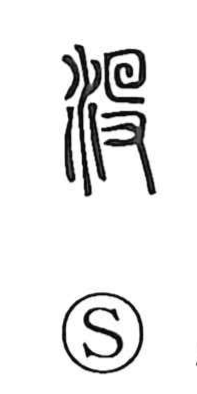

没

Uncategorized
Kun: shizumu, shinu | On: botsu, motsu
to sink ・ to drown ・ to die ・ to set
Explanation
没 (traditional 沒) is a phono-semantic character: the water element sets the scene, while 殳 serves as the phonetic and at the same time sketches a figure face-down with a hand, evoking someone going under. In this shape the word means to sink beneath the surface and vanish from sight, as the Shuowen glosses it, and it naturally extends to drowning and to dying. The related character 歿 (botsu) is used specifically for the death of a human being.